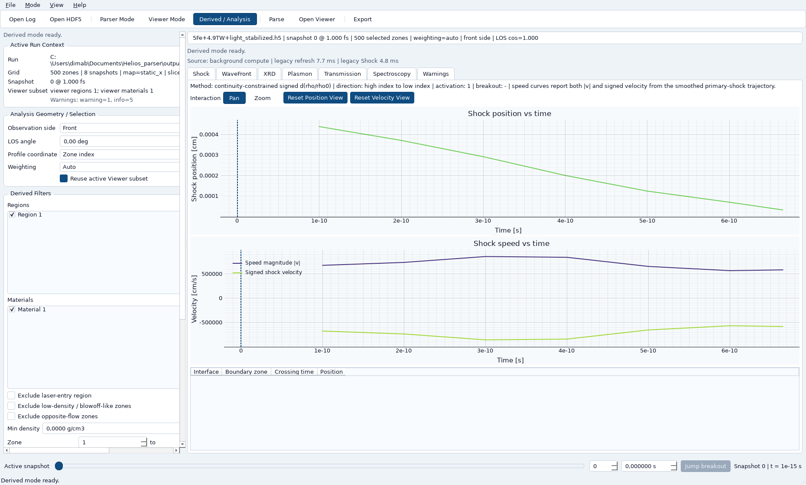
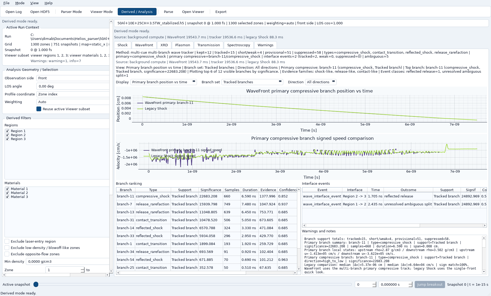
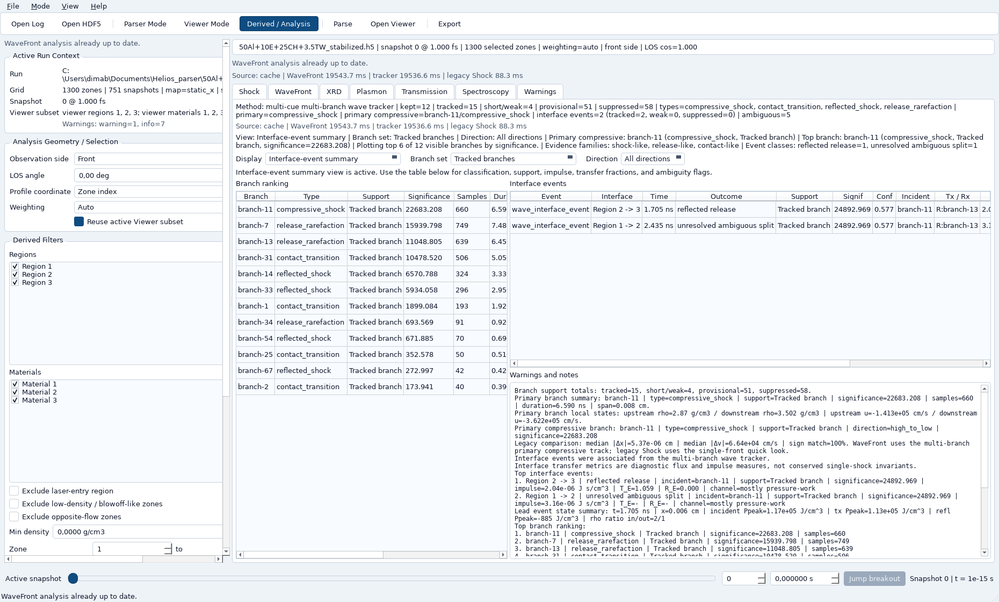
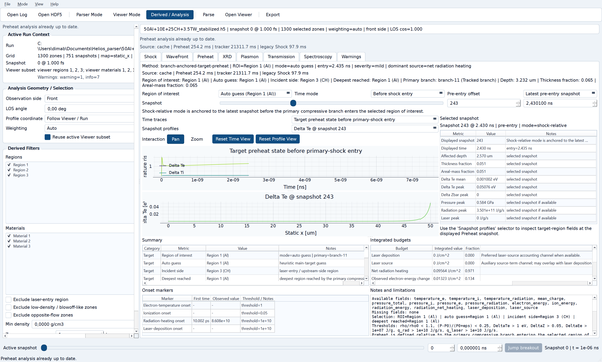

What this project is
HELIOS Parse / View is the current production desktop application for HELIOS post-processing in this repository. It combines three layers that used to be handled separately:
- Parser mode: preview HELIOS
.logfiles and convert them to stabilized HDF5. - Viewer mode: inspect HDF5 runs with explicit center/edge coordinate semantics, region/material overlays, lineouts, mouse probes, and diagnostics.
- Derived / Analysis mode: use fast legacy Shock diagnostics plus lazy advanced WaveFront, interface-event, and Preheat analysis.
The current tree is no longer a small parser demo. It now includes streaming HDF5 conversion, explicit run status, viewer/runtime shared caches, bounded display caches, cooperative background task execution, lazy advanced diagnostics, WaveFront branch tracking, interface-aware summaries, Preheat, production-visible XRD and Spectroscopy, and development-flagged experimental Plasmon/XRTS and Transmission paths.
Where to start
Users
Start here if you want to open runs, inspect diagnostics, and understand what the tabs mean.
Developers
Start here if you need the architecture, data flow, cache model, and extension seams.
Maintainers
Start here for release hygiene, dependency management, screenshots, packaging, and regression risks.
Collaborators and reviewers
Start here for testing expectations, roadmap context, and what the application is actually expected to do today.
Core workflows
1. Parse a HELIOS log
- Open Parser mode and select a
.logfile. - Use the fast preview to inspect snapshot count, fields, geometry, and approximate data volume.
- Convert to stabilized HDF5. The parser keeps explicit run-status metadata and drops only a damaged final block when necessary.
2. Inspect the run in Viewer
- Open the stabilized HDF5 in Viewer mode.
- Switch among zone, static-x, and moving-mesh coordinates using the explicit center/edge model already provided by the reader.
- Use lineouts, mouse probes, and overlays to understand boundaries and evolving fields.
3. Get a fast derived quick look
- Switch to Derived / Analysis.
- The app lands on Shock first, so position, speed, breakout, and crossing-time information appear without waiting for advanced branch tracking.
- Use XRD, Spectroscopy, and Warnings as production tab-local modules. Plasmon/XRTS and Transmission are development-flagged experimental panels.
4. Open advanced analysis when needed
- Open WaveFront to trigger lazy advanced branch tracking and interface-aware diagnostics.
- Open Preheat to evaluate target modification before main shock entry for a chosen region of interest.
- Use the progress bar and status text while heavy advanced analysis runs in the background.
Practical use cases
Quick shock timing check
Use legacy Shock for a fast first answer: front position, velocity, breakout, and lower-table crossing times with adaptive small-time formatting.
Advanced branch inspection
Use WaveFront when you need multi-branch compressive, reflected, release, or contact-like structure rather than a single-front approximation.
Interface interpretation
Use WaveFront interface-event summaries to inspect incident/transmitted/reflected branch linkage, support class, ambiguity, pressure impulse, and diagnostic transfer fractions.
Pre-shock target conditioning
Use Preheat to inspect target-entry timing, region-of-interest override, onset markers, affected depth, and source/budget summaries before the main compressive branch arrives.
Physics-gated production diagnostics
Use the production-visible tabs for order-of-magnitude stable outputs. Experimental diagnostics stay behind development flags until their archived outputs pass the same physical checks.
Collaborator handoff
Use the Developer Guide, Testing Guide, Maintenance notes, and Release Notes together when onboarding another engineer or preparing a shareable bundle.
Documentation map
| Document | Main audience | What it covers |
|---|---|---|
| User Guide | scientists and analysts | real workflows, tab-by-tab behavior, interpretation notes, screenshots, troubleshooting, and practical examples |
| Developer Guide | developers and reviewers | architecture, parser/runtime/viewer/derived boundaries, result models, caches, settings, lazy advanced flow, and extension points |
| Developer Testing | developers and maintainers | test categories, focused commands, instrumentation, manual QA expectations, and completion criteria |
| Maintenance | maintainers | dependencies, packaging, screenshots, release checklist, sample files, documentation upkeep, and common regression risks |
| Future Development | collaborators | what already exists, what remains, technical debt, extension seams, and realistic next priorities |
| Release Notes | users, maintainers, recipients of bundles | release 1.1.0 scope, BPF parser finalization, changelog, attribution, shareable bundle contents, and launch expectations |
| Architecture Reference | developers | concise code-facing note for boundaries, invariants, and implementation-sensitive rules |
Representative screenshots
{kind=link}

{kind=link}

{kind=link}

{kind=link}
